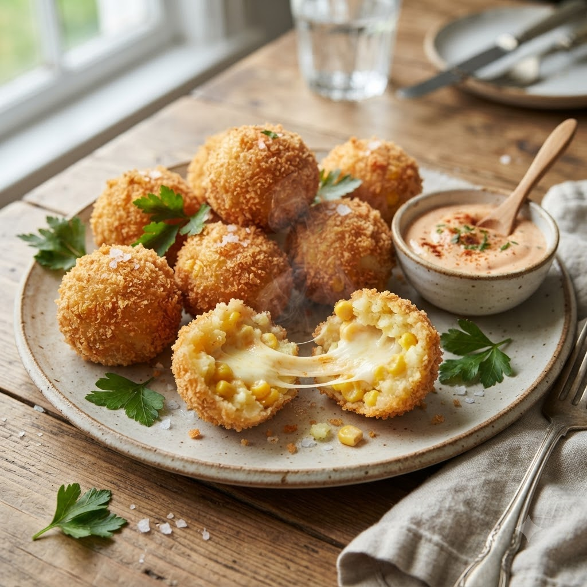

Crispy Corn Cheese Balls

Crispy Corn Cheese Balls
Airfryer – Fry 190°C 11 min makes ~12
Ingredients
- 1 cup boiled sweet corn, lightly mashed
- 1/2 cup mashed potato
- 1/2 cup grated cheese
- 2 tbsp cornflour
- 1/2 tsp black pepper (kali mirch)
- Salt to taste
- 1/2 cup breadcrumbs
- Oil spray
Method
1Preheat: Preheat the Airfryer to 190°C for 4 minutes before adding the food to the basket.
2Mix corn, potato, cheese, cornflour, pepper and salt; shape into small balls.
3Roll each ball in breadcrumbs to coat evenly.
4Spray lightly with oil and place in the basket, spaced apart.
5Air-fry at 190°C for 11 minutes, shaking halfway, until golden and crisp.